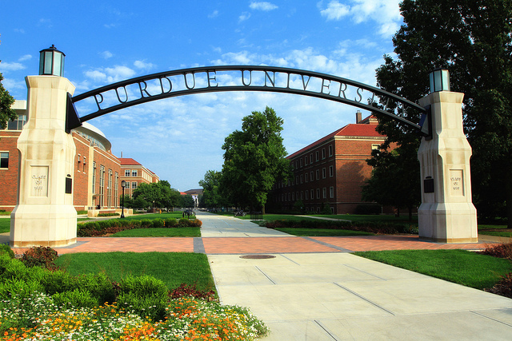

Welcome
My name is Steve Zimmerman and I'd like to welcome you to my webpage where you can learn a little bit more about me. I recently decided to pursue my passion for technology by investing myself in the Dev Bootcamp (DBC) experience. Dev Bootcamp taught me not only the technical and soft skills to be a full stack web developer but more importantly, gave me the confidence and ability to rapidly pickup and learn any new technology. I have a passion for technology and the space where people interact with it. I plan to focus these skills and leverage my engineering background towards a career at an innovative, technology company where I can design and create things that reduce the friction between people and technology. I'm currently working on personal projects and open to new opportunities where I can continue to learn and "make beautiful and meaningful things." If you're looking for someone who is motivated, passionate in learning new technology, you can find my resume and contact information here. I look forward to hearing form you.
More About Me
I was born and raised in Houston, Texas. I was a curious kid with a knack for building and discovering things. Not long after getting a computer for Christmas, my passion for technology began to grow. This passion became my primary hobby and I was building computers and programming games for fun, in no time. This led to taking some programming courses in high school and a summer course at Brown University.
Following high school, I attended Purdue University in West Lafayette, Indiana where I studied Mechanical Engineering. While pursuing my education at Purdue, I took additional courses in Computer Science, but due to a primary focus on Engineering, nothing really came of it.
After graduating with my degree in Mechanical Engineering, I moved to Chicago, IL where I began working for Exelon at a Nuclear Power Plant. This work was an amazing, hands-on experience and I learned a lot of valuable things that you can only get working at a heavily regulated nuclear facility. Due to the rural location of the powerplant, I decided to explore opportunities closer to the city of Chicago, where I took jobs as an Applications Engineer for Interlake Mecalux and a Technical Consultant for LWG Consulting. Over the years while working, my interest for computers and technology remained and I was building personal servers and following the tech industry very closely in my spare time.
After gaining valuable experience utilizing my engineering degree, I realized that I wanted to follow my true passion and therefore I decided to make a career advancement, move to San Francisco and start a new career as a web developer by attending Dev Bootcamp.
During my education at DBC, I re-discovered my passion for learning and creativity and I'm confident that I can rapidly learn any new programming language and apply it to make useful things. DBC has taught be how to become a world class beginner and a world class learner and has given me the confidence to succeed in difficult and confusing challenges. I hope to take these skills to an innovative technology company that encourages rapid learning for all its employees.